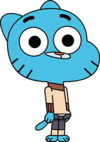

Гамбол Уоттерсон

Гамбол (ранее Зак) Триштофер Уоттерсон (англ. Gumball Tristopher Watterson) — главный герой мультсериала "Удивительный мир Гамбола". Гамбол — это двенадцатилетний котёнок, со светло-голубой шерстью, учащийся в средней школе Элмора вместе со своим сводным десятилетним братом Дарвином и младшей четырёхлетней сестрой Анаис в классе Мисс Симиан. Встречается с Пенни.
Внешний вид
Ранняя версия
Первоначально его хотели сделать голубой собакой, но по мере развития характера персонажа было предложено сделать его чёрным котом, чтобы обыграть часто происходящие с ним неудачи. В итоге создатели решили, что эта черта будет ограничивать героя, и, к тому же, он, будучи чёрным, плохо бы смотрелся на фоне всего шоу, и поэтому было принято решение сделать его синим. Создатели при создании сочли важным заметить, что этого цвета не бывает у реальных кошек, и персонаж лучше бы вписался во вселенную.
Окончательный Дизайн
Котёнок с голубой шерстью и оранжевым носом. На лице присутствуют шесть усов (обычно видно только пять из-за того, что голова отображается под углом), ресниц не видно, но они есть (это видно в таких эпизодах, как «Верните Деньги» и «Начальник»). Нёбо розового цвета, язык светло-розового.
Интересные факты! =D
Неплохо умеет играть на укулеле и петь (серия «Рыцари»).
Абсолютно не умеет ничего ловить, как было показано в сериях «Погоня», «Гигант» и «Пони».
Имеет очень широкие бёдра, что является необычным, поскольку этот признак чаще всего проявляется у женских персонажей в мультфильмах;
У Гамбола на щеках есть шесть усов, но в кадре обычно бывает видно только пять;
Страдает арахнофобией и аллергией на косметику («Свидание» и «Беги, мама, беги»);
Хорошо умеет свистеть («Гигант», «Предатели»);
Ему удаляли аппендикс («Большой Череп») В этой же серии говорится, что он целовал Сасси;
Гамбол очень гибкий и имеет податливое лицо;
В каждом сезоне голос Гамбола становится ниже;
Гамбол и Дарвин боготворят и очень любят мистера Робинсона. Последний в свою очередь терпеть их не может;
В серии «Клуб» показано, что родители Гамбола хотели дать ему второе имя Кристофер, но Ричард назвал сына Триштофером, не видя разницы в этих именах;
«Сокровище» — было показано, что он был очень уродливым при рождении, что, однако противоречит серии «Альтернатива»;
В первом сезоне он имеет слегка неаккуратный контур в некоторых кадрах.
У Гамбола имеется страх утонуть (Гидрофобия) — это было отображено в серии «Сон», где у него началась гипервентиляция и паника, когда он находился внутри тонущей машины. Также есть страх к грозе (Бронтофобия), как показано в серии «The Fridge», когда он был на крыше в грозу и перед ним мелькнула молния, Гамбол сразу же слез с крыши. И страх к пчёлам «The Potion» (Апифобия),
из-за пчелы он испугался и вышвырнул зелье;
Гамбол не появляется только в The Singing, The Sucker и The Spinoffs;
Во время письма он использует левую руку, но это не доказывает то, что он полностью левша;
Любимый свитер Гамбола, в котором он появляется практически в каждой серии, был взят отцом Гамбола Ричардом Уоттерсоном на свалке, что стало известно в серии The Date;
Ненавидит кошек («The Nest»), хотя сам является котом;
Любит грызть свои ручки («The Banana»).
Он умеет копировать голос Анаис, как это показано в серии Паразит.
Он раньше носил носки Дарвина. Как это показано в "Начало" и "Начало 2"